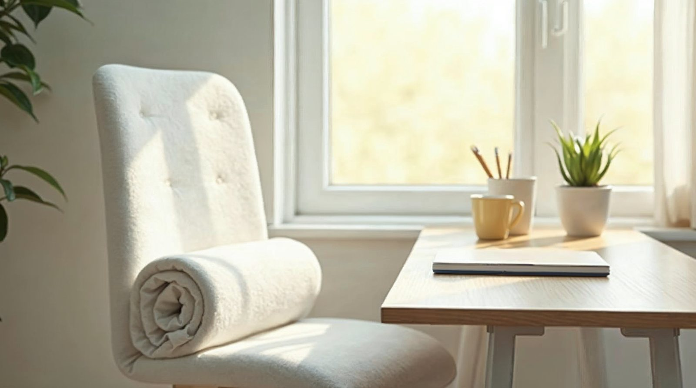
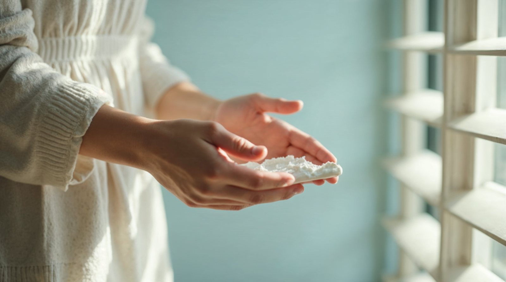
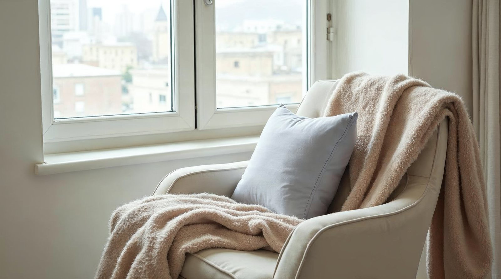
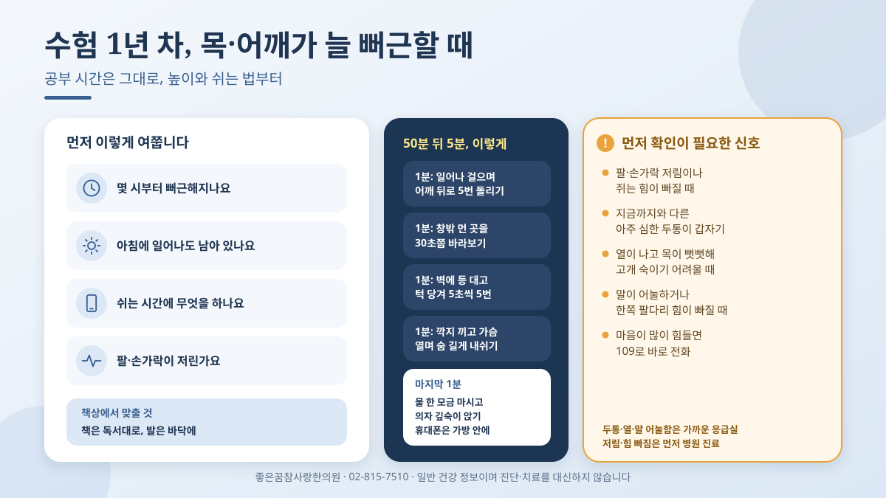

이종호 한의사 감수좋은꿈참사랑한의원 대표원장 (한의사 면허번호 19769)발행 2026-11-25 · 수정 2026-11-27
이 글의 차례
밤 11시 40분, 독서실 칸막이 책상의 스탠드를 끕니다. 의자에서 일어나 고개를 한 바퀴 돌리면 뒷목 어딘가에서 뚝 소리가 나죠. 어깨는 누가 양손으로 지그시 누르고 있는 것처럼 묵직하고요.
가방을 메고 계단을 내려와 상도동 언덕길을 오르는 동안에도 목덜미는 풀릴 기미가 없어요. 내일 아침 9시면 또 노량진 학원 강의실, 늘 앉던 자리에 앉아 있겠지요.
처음 학원에 등록하던 봄에는 이렇지 않았던 것 같은데, 언제부터였는지는 기억도 잘 안 나요. 이제는 눈을 뜨는 순간부터 뻐근한 목이 원래 내 몸인 것처럼 느껴집니다.
진료실에서 이런 말씀을 자주 들어요. "공부하는 사람은 다 이렇지 않나요?" "시험 끝나면 알아서 풀리겠죠." 아프다는 말을 꺼내는 것조차 미안해하는 분도 계세요.
하루에 한 시간을 빼는 것도 뒤처지는 것 같고, 집에는 걱정을 끼치고 싶지 않고, 그러다 보니 목과 어깨는 늘 맨 뒷순위로 밀리죠. 저는 그 마음을 알아요. 같은 칸막이, 같은 의자, 같은 불빛 아래서 1년 가까이 하루하루를 쌓아 오신 거예요. 그동안 얼마나 애쓰셨을까 싶어요.
맞아요, 오래 앉아 공부하는 분이 목과 어깨가 뻐근한 건 원래 그래요. 그런데 그러니까 사실은 두 가지를 나눠서 보셔야 해요. '흔한 것'과 '그냥 둬도 되는 것'은 다른 얘기거든요. 1년 동안 쌓인 뻐근함은 주말 하루 푹 쉰다고 쉽게 풀리지 않는 경우가 많아요.
대신 공부 시간을 줄이지 않고도 바꿀 수 있는 것들이 있어요. 책과 화면의 높이, 의자에 앉는 깊이, 팔을 올려 두는 자리, 그리고 50분 공부한 뒤 쉬는 5분을 어떤 순서로 쓰느냐예요. 여기에 잠드는 시각과 끼니 시각을 고정하면 목과 어깨에도 하루 중 쉬어 갈 틈이 생깁니다.
왜 1년 차가 되면 뻐근함이 '원래 그런 것'처럼 느껴질까요
수험 생활 첫 몇 달은 긴장과 의욕으로 버팁니다. 목이 좀 뻐근해도 하룻밤 자고 나면 대개 가라앉습니다. 그런데 계절이 두세 번 바뀌는 동안 하루 10시간 넘게 같은 자세가 이어지면 어떻게 될까요?
밤사이 다 풀리지 못한 뻐근함이 다음 날로 조금씩 넘어가고, 넘어간 것이 쌓이면 어느 순간 아침부터 목이 무겁습니다. 매일 비슷하게 아프니 비교할 기준도 사라집니다. 1년 차의 뻐근함에서 제가 마음 쓰이는 것은 통증의 크기보다 이 익숙함입니다. 익숙해지면 몸이 보내는 신호를 흘려듣게 되니까요.
자세도 큰 몫을 합니다. 책을 책상 위에 눕혀 두고 보면 고개는 저절로 숙여집니다. 머리가 앞으로 나올수록 목 뒤 근육이 버텨야 할 몫이 커지고, 어깨는 앞으로 말립니다.
독서실 칸막이 책상은 좁고, 시선은 늘 가까운 글자에 머뭅니다. 스탠드가 한쪽에만 있으면 그림자를 피하려고 몸을 슬쩍 기울이게 되고, 필기하는 팔 쪽 어깨는 저도 모르게 올라가 있습니다. 인강을 볼 때 노트북이나 태블릿을 책상에 그대로 두면 화면은 눈보다 한참 아래에 있습니다.
몸을 쓰는 시간이 줄어드는 것도 한몫합니다. 하루에 걷는 시간이 학원과 독서실, 집 사이를 오가는 길이 전부인 분이 많습니다. 여기에 모의고사 성적이 나오는 날의 긴장, 이를 꽉 무는 습관, 자꾸 늦어지는 잠자리가 겹칩니다.
잠이 모자라면 같은 뻐근함도 더 크게 느끼는 경우가 많습니다. 한의학에서는 긴장과 피로가 오래 쌓여 기혈이 원활하게 돌지 못하면 근육이 쉽게 굳고 결린다고 보기도 합니다. 그래서 저는 목만 들여다보지 않고 잠과 소화, 마음의 긴장을 함께 여쭙습니다.
이런 분들을 자주 뵙습니다
이런 분들이 많습니다. 오전에는 학원 강의를 듣고 오후부터 밤까지 독서실에서 자습하는 공무원 시험 준비생입니다. 오후 4시쯤이면 뒷목이 묵직해지고, 저녁을 먹고 돌아와 앉으면 관자놀이까지 조여 온다고 하십니다.
이런 분께는 하루 종일 아프다고 뭉뚱그리기보다 몇 시쯤, 앉은 지 몇 분쯤 지나 뻐근해지는지 적어 와 달라고 부탁드립니다. 그 시각이 보이면 쉬는 시간을 어디에 넣을지도 보입니다.
인강 위주로 공부하는 분들도 자주 뵙습니다. 강의 한 편이 한 시간을 훌쩍 넘기다 보니 중간에 일어나는 일이 거의 없습니다. 이어폰을 끼고 화면 쪽으로 고개를 쭉 내민 채 필기하다 보면, 강의 두 편이 지나도록 자세가 그대로입니다.
강의를 멈추면 흐름이 끊길 것 같아 망설여진다고들 하시지요. 저는 강의 한 편이 끝나는 때를 쉬는 시간의 신호로 삼아 보자고 말씀드립니다.
회사를 그만두고 다시 책상 앞에 앉은 분들도 계십니다. 직장 다닐 때도 목이 뻐근했는데, 수험 생활을 시작하고 나서는 출퇴근길에 걷던 시간마저 사라졌다고 하십니다. 몸이 예전 같지 않다는 생각에 마음이 더 조급해지기도 하고요. 이런 분께는 공부를 시작하기 전과 점심 뒤에 10~15분 걷는 시간을 하루 계획표에 먼저 적어 넣자고 합니다.
그리고 쉬는 시간마다 휴대폰을 여는 분들. 사실 이런 분이 가장 많습니다. 50분 공부하고 10분 쉬는데, 그 10분 내내 고개를 숙여 휴대폰을 봅니다. 마음은 쉬었을지 몰라도 목은 그 10분 동안에도 같은 일을 하고 있었던 셈입니다.
이 이야기를 꺼내면 다들 조금 멋쩍게 웃으십니다. 탓하려는 말이 아닙니다. 그 짧은 시간마저 없었다면 버티기 어려웠다는 것도 압니다. 다만 쉬는 시간의 앞부분만이라도 목에게 돌려주자는 것입니다.

책상 앞에서 다시 맞춰 볼 것
먼저 친구에게 옆모습 사진을 한 장 부탁해 보세요. 평소 공부하는 자세 그대로 앉아서요. 사진 속 귀가 어깨보다 한참 앞에 있나요? 그렇다면 머리가 앞으로 나와 있는 겁니다. 사진 한 장이 무엇부터 바꿀지 알려 줍니다.
책은 독서대로 세웁니다. 읽는 공부를 할 때는 독서대를 높여 시선이 살짝만 아래로 향하게 하고, 문제를 풀며 필기해야 할 때는 낮춰서 쓰기 편하게 합니다. 하루에도 몇 번씩 높이를 바꾸는 게 번거로워 보이지만, 읽을 때와 쓸 때 몸이 편한 높이는 다릅니다.
인강용 노트북은 받침대나 두꺼운 책 위에 올려 화면 위쪽이 눈높이쯤 오게 하고, 키보드는 따로 쓰시는 편이 좋습니다. 태블릿은 거치대로 세웁니다.
의자에는 엉덩이를 등받이 쪽 끝까지 넣어 앉습니다. 발바닥이 바닥에 닿아야 하고, 무릎은 엉덩이와 비슷하거나 약간 낮은 높이가 편합니다. 독서실 의자가 높아 발이 뜬다면 발밑에 상자나 두꺼운 책을 받쳐 보세요.
허리와 등받이 사이가 뜨면 수건을 말아 넣습니다. 팔꿈치는 책상 위에 편히 얹혀야 합니다. 책상이 높아 어깨가 들린다면 의자를 조금 올리고, 그만큼 발 받침으로 높이를 맞춥니다.
스탠드는 필기하는 손의 반대쪽에서 비추게 두면 손 그림자를 피하려 몸을 기울일 일이 줄어듭니다. 휴대폰은 책상 위가 아니라 가방 안에 넣어 두세요. 눈에 보이면 손이 가고, 손이 가면 고개가 숙여집니다.

50분 공부한 뒤 5분, 이렇게 쉬어 보세요
쉬는 시간은 길이보다 순서가 먼저입니다. 50분 공부하고 5분을 쉰다면 이렇게 써 보세요. 펜을 내려놓고 의자에서 완전히 일어납니다. 첫 1분은 복도나 계단 쪽으로 걸어가며 어깨를 뒤로 크게, 천천히 다섯 번 돌립니다. 다음 1분은 창밖이나 복도 끝처럼 먼 곳을 30초쯤 바라봅니다. 칸막이 안에서 가까운 글자만 보던 눈도 쉬어야 하니까요.
세 번째 1분에는 벽에 등을 대고 섭니다. 뒤통수와 어깨, 엉덩이가 벽에 함께 닿는지 느껴 보고, 턱을 살짝 당겨 목 뒤를 길게 늘인 채 5초 머뭅니다. 이것을 다섯 번 합니다.
네 번째 1분에는 양손을 등 뒤로 깍지 끼고 가슴을 천천히 열면서 숨을 길게 내쉽니다. 들이쉴 때보다 내쉴 때를 조금 더 길게 하면 어깨에 들어간 힘을 빼기가 한결 쉽습니다. 마지막 1분에는 물 한 모금을 마시고 자리로 돌아와, 어깨를 귀 쪽으로 한껏 올렸다가 툭 떨어뜨리기를 세 번 한 뒤 의자 깊숙이 앉습니다.
모든 동작은 아프지 않은 범위에서 천천히, 반동 없이 합니다. 당기는 느낌까지는 괜찮지만 찌릿하거나 팔로 저림이 내려가면 그 동작은 바로 멈추세요. 그리고 세 번째 쉬는 시간마다, 그러니까 두세 시간에 한 번은 10~15분쯤 건물 밖으로 나가 걸어 보세요. 점심과 저녁을 먹은 뒤에도 바로 앉지 말고 10분쯤 걷고 들어옵니다.
타이머는 휴대폰 알람보다 손목시계나 작은 탁상 타이머를 권합니다. 알람을 끄려고 휴대폰을 여는 순간, 쉬는 시간이 화면 보는 시간으로 바뀌기 쉽기 때문입니다.
강의가 90분씩 이어져 중간에 일어날 수 없다면 앉은 채로라도 해 보세요. 어깨를 내리고, 턱을 살짝 당기고, 윗니와 아랫니가 닿아 있는지 확인해 떼어 줍니다. 이 세 가지는 강의를 들으면서도 할 수 있습니다.
잠과 끼니도 목과 어깨에 남습니다
잠은 낮에 일한 목과 어깨가 쉬는 시간이기도 합니다. 아침에 일어났을 때 이미 뻐근하다면 밤사이 다 쉬지 못했다는 신호일 수 있습니다.
밤 공부를 마치고 돌아와 누운 채 휴대폰으로 하루를 보상받는 시간이 길어지면, 잠은 늦어지고 목은 누워서도 또 숙여져 있습니다. 엎드려 휴대폰을 보는 자세는 목에 특히 부담이 됩니다. 베개는 누웠을 때 목이 앞으로 꺾이거나 뒤로 젖혀지지 않는 높이면 충분합니다.
잠들기 1~2시간 전에 따뜻한 물에 몸을 담그면 하루의 긴장을 내려놓는 신호로 쓰기 좋습니다. 고시원이나 원룸이라 욕조가 없다면 따뜻한 샤워로 목덜미와 어깨를 충분히 데우거나, 대야에 발을 10~15분 담그는 것으로 대신해도 됩니다. 일어나는 시각은 주말에도 평일과 한 시간 넘게 차이 나지 않게 맞춥니다.
독서실 책상에 엎드려 자는 낮잠도 한번 돌아보세요. 고개를 한쪽으로 돌린 채 엎드리면 목은 꺾인 자세로 버팁니다. 낮잠이 꼭 필요하다면 오후 3시 전에 20분 안쪽으로, 의자에 기대어 앉거나 팔 위에 이마를 대고 정면으로 엎드리는 편이 목에는 덜 부담스럽습니다.
끼니 시각이 날마다 다르면 몸은 언제 쉬어야 할지 헷갈립니다. 쉬는 시간에 급하게 먹고 바로 책상에 앉으면 속이 더부룩하고 등 한가운데까지 묵직하다는 분도 있습니다. 아침, 점심, 저녁을 되도록 같은 시각에 드시고 저녁은 잠들기 3시간 전쯤 마치세요. 커피는 점심 무렵까지만 드시고, 오후에는 따뜻한 물이나 보리차로 바꿔 보시면 좋겠습니다.
시험 날짜가 다가올수록 무리하지 않으려면
시험이 가까워지면 공부 시간을 늘리고 싶어집니다. 그때 가장 먼저 줄어드는 것이 쉬는 시간과 잠이고, 그 변화를 제일 먼저 알아채는 것이 목과 어깨입니다. 저는 시험이 다가올수록 쉬는 5분만큼은 그대로 지키자고 말씀드립니다. 공부 시간을 더 내고 싶다면 잠이 아니라 휴대폰을 보던 시간에서 가져오는 쪽이 몸에 무리가 덜합니다.
시험 2~3주 전부터는 새로운 것을 시작하지 않는 편이 좋습니다. 처음 쓰는 베개, 처음 받아 보는 센 마사지, 갑자기 시작하는 고강도 운동 같은 것들입니다. 몸이 어떻게 반응할지 미리 알기 어렵기 때문입니다.
진료를 받아 보려 한다면 시험 직전보다 몇 주 여유를 두고 시작하시길 권합니다. 치료 뒤 나른함을 느끼는 분도 있어서, 중요한 시험이나 모의고사 바로 전날은 피하는 편이 마음이 편합니다.
시험장의 책상과 의자는 고를 수 없습니다. 그래도 쉬는 시간에 어깨를 내리고 턱을 당기는 것 정도는 할 수 있습니다. 평소 50분마다 해 오던 동작이라면 낯선 자리에서도 몸이 먼저 기억해 냅니다. 시험 시각에 맞춰 일어나는 연습도 몇 주 전부터 해 두세요.

얼마나 지켜보고, 언제 진료를 받을까요
책상 높이와 쉬는 순서를 바꾼 뒤에는 2주쯤 기록해 보세요. 뻐근함이 시작되는 시각, 그때의 점수(0~10), 아침에 일어났을 때 남아 있는지, 두통이 있었는지 정도면 충분합니다. 2~3주가 지나도 그대로이거나 두통이 잦아지거나, 목 때문에 잠을 설치는 날이 늘어난다면 혼자 버티지 마시고 상담을 받아 보세요.
먼저 이렇게 여쭙니다
- 수험 생활을 얼마나 해 오셨는지, 시험은 언제인지
- 몇 시에 일어나 학원에 가고, 독서실에는 몇 시까지 있다가, 몇 시에 잠드는지
- 뻐근함이 하루 중 언제 시작되는지, 아침에도 남아 있는지
- 두통이나 눈의 피로, 턱의 뻐근함, 팔이나 손이 저린 적은 없는지
좋은꿈참사랑한의원에 처음 오시면
처음 오시면 저는 양손을 올려 봐 달라고 말씀드리고 맥부터 짚습니다. 맥을 짚으면서 위의 것들을 차례로 여쭙고, 잠은 깊은지, 끼니는 제때 드시는지, 소화와 대소변은 편한지, 몸이 찬 편인지 더운 편인지도 함께 여쭙습니다. 필요하면 혀도 봅니다.
그다음 앉은 모습과 선 모습을 옆에서 보며 귀와 어깨의 위치를 확인하고, 고개를 돌리고 숙이고 젖히는 움직임, 날개뼈의 움직임, 팔의 감각과 쥐는 힘을 살핍니다.
필요하다고 판단되면 초음파로 목과 어깨 둘레의 근육과 힘줄을 함께 봅니다. 저림이나 두통처럼 신경 쪽 확인이 먼저라고 판단되면 영상 검사가 가능한 의료기관을 먼저 안내합니다.
그 뒤 상태에 맞춰 침이나 추나 등을 신중하게 정합니다. 추나는 머리부터 목, 등, 골반까지 한 단계씩 진행하며, 말씀을 들으면서 세기를 조절합니다.
진료를 마치기 전에는 가져오신 책상 사진을 함께 보며 독서대와 의자 높이, 쉬는 5분의 순서를 정해 드립니다. 다시 오시면 그 순서를 지켜 보셨는지, 뻐근함이 시작되는 시각이 달라졌는지부터 이어서 여쭙습니다.
진료시간은 평일 09:30~20:00(점심 13:00~14:00), 토·일·공휴일 09:30~15:00(점심시간 없음)입니다. 학원 수업이 끝난 저녁이나 주말에 오실 때는 접수 마감 시각을 방문 전 전화로 확인해 주세요. 노량진역(1·9호선) 3번 출구에서 마을버스 동작01을 타고 신동아리버파크에서 내리시면 됩니다.
건강보험(또는 자동차보험) 적용 여부는 방문 전 전화로 확인해 주세요. 오실 때 책상과 의자에 앉은 옆모습 사진, 하루 시간표, 2주 동안의 기록, 복용 중인 약을 챙겨 오시면 이야기가 훨씬 빨라집니다.
이런 증상은 먼저 확인이 필요합니다
- 갑자기 생긴 아주 심한 두통, 열과 함께 목이 뻣뻣해 고개를 숙이기 어려운 경우
- 말이 어눌해지거나 한쪽 팔다리에 힘이 빠지는 경우, 팔 저림이 퍼지며 쥐는 힘이 빠지는 경우
이런 신호가 있으면 한의원보다 가까운 병원이나 응급실을 먼저 찾으세요.
마치며
1년은 짧지 않은 시간이에요. 같은 자리에 앉아 같은 책장을 넘기며 버텨 온 시간이 목과 어깨에 고스란히 남아 있죠. 그 뻐근함을 너무 미워하지는 마세요. 하루 10시간 넘게 머리를 받쳐 준 게 바로 그 목과 어깨였으니까요. 시험은 머리로 치르지만, 그 머리를 끝까지 받쳐 주는 건 몸이에요.
목과 어깨를 살피는 건 제가 맡을게요. 대신 하나만 부탁드려요. 50분마다 한 번, 몸에게 5분을 돌려주세요. 딴 건 지금 하시던 대로 하셔도 괜찮아요. 공부 시간을 줄이시라는 말이 아니에요.
처음 며칠은 어색하고 공부 흐름이 끊기는 것 같을 거예요. 원래 그래요. 그래도 일주일쯤 되풀이하다 보면 쉬는 순서가 조금씩 손에 익어요. 한 번에 길게 쉬는 것보다 짧게, 자주, 매일 쉬는 쪽이 오래 이어 가기 쉽거든요.
기록장 한쪽에 뻐근함이 시작된 시각을 한 줄씩만 적어 두세요. 다음에 오시면 그 한 줄과 함께, 쉬는 5분 동안 무엇을 하셨는지부터 여쭐게요. 궁금한 건 그때 편하게 물어보세요.
함께 읽으면 좋은 글
- 노량진에서 하루 종일 앉아 공부하는 수험생의 허리와 목은 어떻게 살피나요?
- 스터디카페 낮은 책상에서 고개를 숙여 공부하면 등 위쪽이 뻐근할 때는?
- 거북목과 라운드숄더는 집에서 어떤 스트레칭을 해 볼 수 있나요?
- 시험 4주 전에는 잠과 식사 리듬을 어떻게 점검하면 되나요?

여쭙는 것
- 수험 생활을 얼마나 해 오셨는지, 시험은 언제인지
- 몇 시에 일어나 학원에 가고, 독서실에는 몇 시까지 있다가, 몇 시에 잠드는지
- 뻐근함이 하루 중 언제 시작되는지, 아침에도 남아 있는지
먼저 확인이 필요한 신호
- 갑자기 생긴 아주 심한 두통, 열과 함께 목이 뻣뻣해 고개를 숙이기 어려운 경우
- 말이 어눌해지거나 한쪽 팔다리에 힘이 빠지는 경우, 팔 저림이 퍼지며 쥐는 힘이 빠…
자주 묻는 질문
공부 시간을 줄이지 않고도 목과 어깨 부담을 덜 수 있을까요?
공부 시간은 그대로 두고 책과 화면 높이, 의자에 앉는 깊이, 50분 뒤 쉬는 5분의 순서, 잠과 끼니 시각부터 바꿔 보시길 권합니다. 몸이 받아들이는 정도는 사람마다 달라 2주쯤 기록하며 함께 살펴봅니다.
쉬는 시간에 휴대폰을 보면 안 되나요?
고개를 숙이고 보면 목은 쉬는 시간에도 같은 일을 하게 됩니다. 쉬는 시간의 앞부분은 일어나 걷고 어깨를 돌리는 데 쓰고, 휴대폰을 꼭 봐야 한다면 눈높이로 들고 짧게 보세요.
독서실 책상에 엎드려 낮잠을 자도 괜찮을까요?
고개를 한쪽으로 돌린 채 오래 엎드리면 목이 꺾인 자세로 버티게 됩니다. 낮잠은 오후 3시 전에 20분 안쪽으로, 의자에 기대거나 팔 위에 이마를 대고 정면으로 엎드리는 편을 권합니다.
팔이나 손가락이 저린데 공부 자세 때문일까요?
자세의 영향일 수도 있지만 목을 지나는 신경 쪽 문제일 수도 있어, 자세만 고치며 지켜보지 않는 편이 좋습니다. 어느 손가락이 언제 저린지 적어 와 주시면 진찰에서 목과 팔의 감각, 쥐는 힘을 함께 확인합니다.
시험이 얼마 남지 않았는데 지금 진료를 시작해도 될까요?
가능합니다. 다만 치료 뒤 나른함을 느끼는 분도 있어 시험이나 모의고사 바로 전날은 피하고, 몇 주 여유를 두고 시작하시길 권합니다. 진료시간은 평일 09:30~20:00(점심 13:00~14:00), 토·일·공휴일 09:30~15:00(점심시간 없음)입니다.
좋은꿈참사랑한의원은 재진 때 지난번 이야기부터 이어서 여쭙니다. 진료시간과 예약은 오시는 길에서 확인하세요.
어디서 상담받을 수 있나요?
좋은꿈참사랑한의원은 서울 동작구 만양로2길 2 신성빌딩 3층·5층(서울 동작구 상도동, 7호선 상도역 3번 출구 근처)에 있습니다. 한의사 3명(이종호 대표원장, 조영기 수석진료원장, 정원영 진료원장)이 진료합니다. 진료시간은 평일 09:30~20:00(점심 13:00~14:00), 토·일·공휴일 09:30~15:00이며, 방문 전 전화로 확인을 권합니다. 예약은 네이버 예약, 카카오톡 상담, 전화 02-815-7510로 받습니다.
이 글은 일반적인 건강 정보이며 개인의 진단이나 치료를 대신하지 않습니다. 증상이 있거나 복용 중인 약이 있다면 진료를 통해 확인하세요. 치료 효과는 개인마다 다를 수 있습니다.
작성 기준: 일반적으로 알려져 있는 건강 정보를 참고해 정리했습니다(대표원장 감수). 증상 기록은 1~2주 동안 하루 1회, 비슷한 시간에 적어 오시면 지난 상태와 비교하기 쉽습니다.